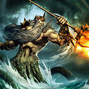

Нептун - один з найдавніших богів римського пантеону. Його ототожнювали з богом грецької міфології Посейдоном. У Стародавньому Римі 23 липня відзначали свято нептуналії в честь бога Нептуна, сподіваючись таким чином врятувати урожай від посухи.
Про походження цього бога майже нічого не відомо, але не викликає сумнівів та обставина, що Нептун завжди був пов'язаний з водою.
У свиті бога складалися такі божества, як Салація (уособлення руху моря) і ваніль (уособлення хвилі прибою). Салація у древніх римлян ототожнювалася з грецькими морськими богинями Фетідою і Амфітрітою.
В основному Нептуна почитали люди, які так чи інакше були пов'язані з морем: мореплавці, торговці, рибалки. Цьому богу приписували також заступництво коням. На честь кінного Нептуна влаштовували свята і кінні змагання. Внаслідок ототожнення з Посейдоном Нептун почали шанувати у римлян як бог, пов'язаний з кіньми, покровитель вершників; був заснований свято кінного Нептуна, злився згодом з консуалії.